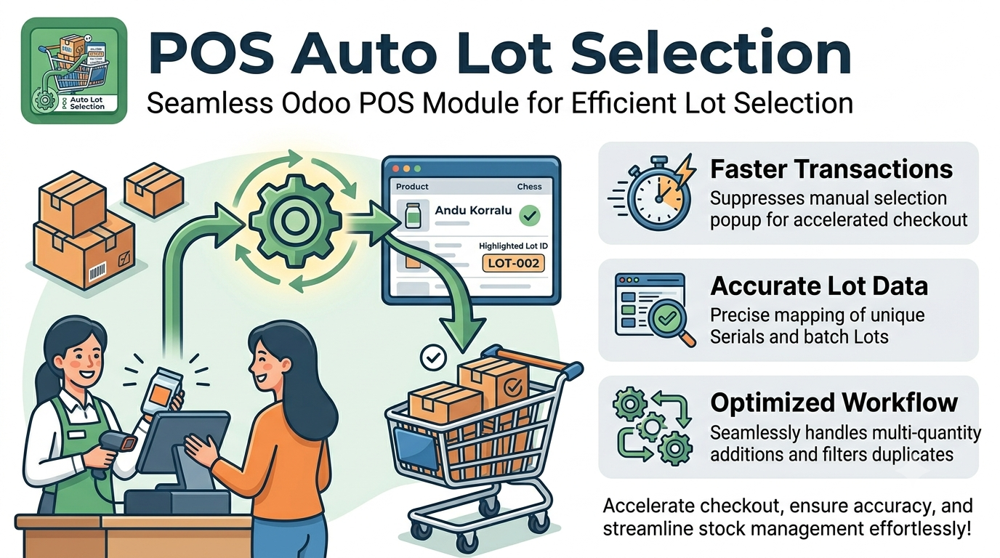

Supercharge your retail checkout speed. This module completely eliminates manual lot selection popups by automatically assigning the oldest available stock directly to your Point of Sale cart.
No more UI interruptions. Cashiers can scan and sell instantly without stopping to type or select lot numbers.
Automatically queries your backend database to fetch and assign the oldest stock first, reducing inventory waste.
If stock runs out or discrepancies occur, the module gracefully falls back to the native Odoo popup, preventing register blocks.
stock.quant for the
active POS location, ignoring serials already in the draft cart.
For this automation to trigger flawlessly, your database must be properly normalized. This module relies strictly on assigned Lot/Serial numbers.
LEGACY-BATCH) to those existing quantities.
Developed with precision
Have questions or need advanced customizations? Let's connect!